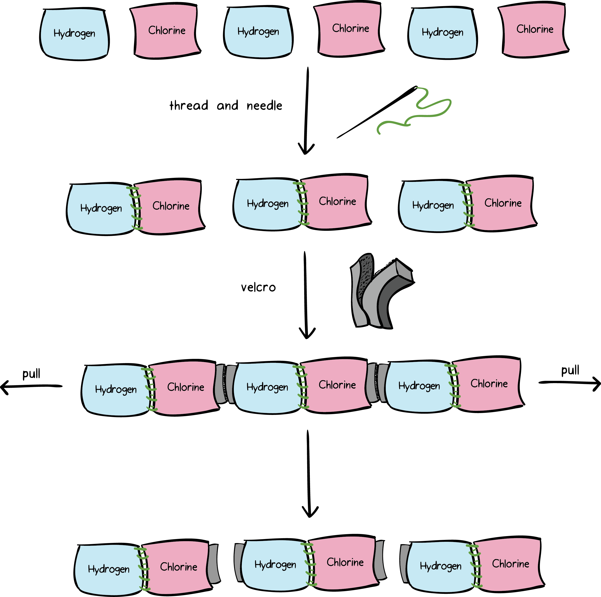
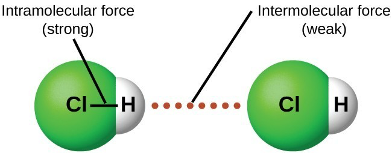
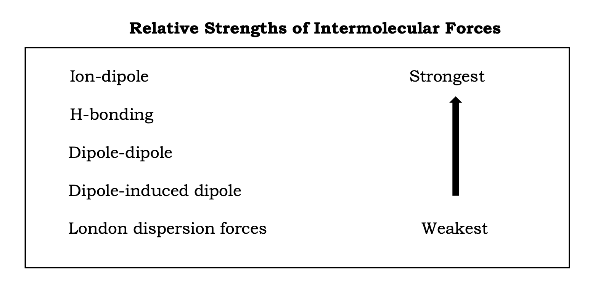

Where the Invisible Explains the Observable
Are you ready to unlock the mysteries of molecules?
Something invisible is shaping what you see.
Follow a clue, open your profile folder, and prepare to uncover how hidden molecular forces explain everyday observations.
Official MOLECULINK Case Notice
A pattern has been detected in ordinary events: droplets holding their shape, liquids vanishing into air, and heat changing what matter does. The evidence is visible, but the cause is hidden. Your task is to enter the case, examine the molecular clues, and prove how the invisible explains the observable.
You are now entering
Where the Invisible Explains the Observable
A self-paced Chemistry and Physical Science learning ecosystem for Grade 11 and Grade 12 learners. This profile folder introduces the mission, vision, development team, and headquarters before the briefing begins.
Mission
To help learners visualize invisible molecular interactions through engaging, inquiry-based investigations, digital tools, tactile models, and formative checks.
Vision
MOLECULINK aims to support diverse learners as they connect invisible molecular behavior to observable events in daily life.
Development Team
Meet the development team behind MOLECULINK.
Rannie J. Dagal
MAEd General Science Graduate Student
Edrick R. Pascual
MAEd General Science Graduate Student
Ysabel Angela V. Embile
MAEd General Science Graduate Student
Supervising Investigator
Dr. Arlon P. Cadiz
Professor, Instructional Materials Development for Science Education
Pampanga State University - Graduate School
Ready for Your Briefing?
As an investigator, you will use a variety of tools to solve molecular mysteries.
Current Case
Intermolecular Forces and Their Effects on Physical Properties
Before entering Case 001, check your detective readiness and review the investigation tools available to you.
Lesson hook
Interactive lesson
E-nquiry or tactile lab
Record and reflection
Directions
Read each question carefully.
Choose the best answer.
Answer honestly.
Your progress will be saved in your Detective Record.
Readiness Progress
Before Your First Case
This 15-item assessment is not graded as failure. It records what you already know before the investigation begins.
Readiness Assessment
Question 1
Your first clues are recorded.
You are now ready to begin Mission 1.
Next step
Open the Readiness Assessment above. After submission, the Proceed to Mission 1 button will appear.
Unseen forces within and between molecules
Mission Welcome
In this case, you will follow the cupcake evidence to decide whether heating breaks bonds inside water molecules or overcomes attractions between neighboring water molecules.
Case File 01
Sharmaine and Vanessa are baking chocolate cupcakes for a class activity. As the pan warms, the chocolate softens, the butter melts, and water in the batter turns into steam that helps the cupcake rise. The two wonder what force causes these changes. Vanessa thinks the water may have broken apart from within. Sharmaine suspects the water is still water, but the attractions between water molecules were overcome.
Lead Investigation Question
When water turns into steam during baking, what force is mainly overcome: bonds inside water molecules or attractions between water molecules?
Evidence Briefing
Open these short reviews only when you need the clue. They prepare you to compare forces inside molecules and attractions between molecules.
Molecular lens
Clue: If the bond holds atoms inside one molecule, it is an intramolecular force.
Before solving the cupcake case, recall that atoms are held together by chemical bonding forces. In this mission, the key review is covalent bonding because covalent bonds create neutral molecules such as water. Once a molecule is formed, chemists can show it through formulas, structural drawings, and 3D models.
Keywords: cations, anions, full charges.
Example: Na+ and Cl− in sodium chloride.
Usually forms an ionic lattice, not separate neutral molecules.
Keywords: shared electron pairs, neutral molecules.
Examples: O-H in H2O, C-H in CH4, N-H in NH3.
These bonds stay intact when water turns into steam during ordinary heating.
Keywords: metal atoms, mobile electrons.
Examples: copper wire, aluminum foil, iron nails.
Explains conductivity and malleability in metals.
Review checkpoint
In the cupcake case, water remains H2O when it becomes steam. What happens to the O-H covalent bonds inside each water molecule?
A molecule can be shown in several forms. Use these views to connect the chemical formula, the atoms bonded inside one molecule, the 3D shape, and the clues that affect intermolecular forces later.
Learning Objectives
Competency
The learners use diagrams to differentiate intermolecular forces from intramolecular forces.
Evidence Presentation
Open each exhibit to reveal the clue. Then switch between daily-life examples and chemical formula examples.
The glue inside: strong chemical bonds that hold atoms together to make one molecule. Breaking these bonds changes the substance through a chemical reaction.
Real-life clues: Caramelizing sugar, burning paper, and cooking an egg involve chemical changes because bonds inside substances are rearranged.
Detective clue: If atoms are being held together inside one molecule, the force is intramolecular.
The Velcro between: weaker attractions between neighboring molecules. Overcoming these attractions changes physical state without changing chemical identity.
Real-life clues: Butter melts, chocolate softens, and water becomes steam because molecules move farther apart. The molecules do not disappear or turn into new atoms.
Detective clue: If separate molecules attract each other, the force is intermolecular.
Choose the best label for each clue.
Connecting the Evidence
Open Exhibit A first for the thread-and-Velcro analogy, then Exhibit B to transfer the same idea to actual molecules.
Exhibit A: Thread and Velcro Analogy

Image source: Studocu, “Intramolecular and Intermolecular Forces.”
Analogy clue
The thread-and-needle connection represents strong bonds holding atoms inside one molecule. The Velcro between molecule units represents weaker attractions between separate molecules.
Before the molecule diagram
First label the stitched part as intramolecular and the Velcro contact as intermolecular. Then move to the molecule diagram and look for the same inside-versus-between pattern.

Image source: Lumen Learning, Chemistry for Majors, “Intermolecular Forces.”
Molecular lens
After the thread-and-Velcro analogy, use this diagram to transfer the idea to actual molecules. The solid H-Cl bond is intramolecular; the dotted attraction between molecules is intermolecular.
Abstract clue
Molecules are too small to see directly, so diagrams help us label which force is inside one molecule and which force acts between molecules.
Investigation
Choose one route first. You may return later to try the other route for more evidence.
Digital Investigation
Adjust energy and see whether attractions between molecules or bonds inside molecules are affected first.
Hint: Watch what changes first: molecule spacing or the O–H bonds inside water.
Laboratory Investigation
Build molecules using sticks for covalent bonds and yarn or Velcro for attractions between molecules.
Hint: Label every connector as either inside one molecule or between separate molecules.
Initial Hypothesis
When the cupcake rises because water turns into steam, which statement best explains what happened?
Use this only as support. If the video does not load, the notebook, photos, and activities still complete the lesson.
Tap a clue card, connect it to the cupcake mystery, then choose the best explanation.
Games played within one barangay are like intramolecular forces. An interbarangay competition is like intermolecular forces because the interaction happens between separate units.
Chocolate softens, butter melts, and water becomes steam. The molecules do not disappear; many separate from neighboring molecules as attractions are overcome.
Notebook Quick Check
Which explanation matches the cupcake evidence?
Mission Debrief
H2O molecule
O–H bonds stay intact
H2O molecule
molecules move farther apart
Using the diagram, what happens first when liquid water boils?
Investigator's Journal
How did an invisible molecular interaction explain an observable physical property today?
Automated Mission Report Tracker
This updates as you complete Mission 1 actions. No need to tick boxes manually.
Case Closed
Next Mission Hint
Case 001 showed that water molecules stayed intact while attractions between molecules were overcome. In Case 002, you will identify the molecular suspects: the specific intermolecular forces responsible for those attractions.
Meet the types of intermolecular forces
Mission Welcome
Following the successful investigation of the Cupcake Case, the MOLECULINK Detective Agency is called to investigate a new molecular mystery. Everyday substances have left behind unusual evidence: some molecules cling together with remarkable strength, while others drift apart with little attraction. Your mission is to examine the molecular clues, identify the invisible force responsible, and uncover which intermolecular suspect is behind each case.
Case File 002
Mission Bridge from Case 001
Case 001 proved that ordinary heating can overcome attractions between molecules without breaking covalent bonds inside each molecule. Case 002 asks a new question: what kind of intermolecular force is doing the attracting?
Lead Investigation Question
How can molecular clues help identify London dispersion forces, dipole-dipole forces, and hydrogen bonding?
Learning Objectives
Competency
The learners describe different types of intermolecular forces, such as London dispersion forces, dipole-dipole forces, and hydrogen bonding.
Evidence Briefing
Molecules are neutral overall. The labels δ+ and δ− mean partial positive and negative regions, not full ionic charges. Tap each suspect card to reveal evidence and check your understanding.
Definition: temporary attraction caused when electrons briefly shift and create temporary partial charges.
Molecular clue: present in all molecules; dominant or only IMF in nonpolar molecules.
Daily-life evidence: nonpolar gases and fuels separate easily, but large molecules like iodine can still attract strongly because they have many electrons.
Definition: attraction between the partial positive end of one polar molecule and the partial negative end of another.
Molecular clue: the molecule is polar and has a permanent dipole.
Daily-life evidence: polar liquids often cling more strongly than similar-sized nonpolar liquids.
Definition: strong dipole-dipole attraction when H is directly bonded to N, O, or F and is attracted to a lone pair on nearby N, O, or F.
Molecular clue: look for H-N, H-O, or H-F bonds. H bonded to C does not qualify.
Daily-life evidence: water has unusually high surface tension and boiling point for its small size.
Evidence Briefing
London dispersion forces happen when electrons briefly shift, creating temporary partial charges that attract nearby molecules.
Examples: CH4, CO2, I2, noble gases. London dispersion forces can become stronger in large or heavy molecules with many electrons.
Dipole-dipole forces occur when polar molecules align so the positive end of one molecule attracts the negative end of another.
The dipole arrow points toward the more electronegative δ− side. The crossed/plus tail marks the δ+ side.
Hydrogen bonding is a strong dipole-dipole attraction that occurs when H is directly bonded to N, O, or F and is attracted to a lone pair on nearby N, O, or F.
Example shown: H2O to H2O. The dotted line is between Hδ+ and an oxygen lone pair.
Interactive Evidence
Which intermolecular force is strongest for this molecule?
Relative Strength Summary
For similar-sized molecules, choose the forces from strongest to weakest. Click the cards in order.
Caution: London dispersion forces can become stronger in large molecules with many electrons, so molecular size also matters.
Use one investigation route to collect evidence, then choose one short practice activity if you need more support before the Evidence Check.
Digital Investigation: E-nquiry
Choose molecules, inspect polarity clues, and reveal the strongest intermolecular force.
Hint: Ask first: Is it nonpolar, polar, or does it have H directly bonded to N, O, or F?
Hands-on Investigation: Tactile Lab
Use yarn, Velcro, tape, or improvised connectors to model London dispersion, dipole-dipole, and hydrogen bonding.
Hint: Label each connection as temporary dipole, opposite partial-charge attraction, or hydrogen bond.
Suggested Detective Toolkit Practice
Choose only what fits your need: decision practice for identifying forces, or a short text case for explaining your evidence.
Use this for extra explanation after reading the decision guide.
Daily-Life Link
Water clings more strongly than methane because water can hydrogen bond. Similar-sized polar molecules tend to attract more strongly than nonpolar molecules.
Analogy
London dispersion is a brief passing glance, dipole-dipole is a steady opposite-end attraction, and hydrogen bonding is a stronger selected connection when H is bonded to N, O, or F.
Mission Debrief
Which clue shows that a molecule can form hydrogen bonding?
Investigator's Journal
How did an invisible molecular interaction explain an observable physical property today?
Case Closed
Effects of intermolecular forces on properties
Mission Welcome
In this case, you will connect invisible intermolecular attractions to observable properties such as boiling point, melting point, viscosity, vapor pressure, and surface tension.
Case File
After identifying the molecular suspects, Ma'am Castro asks the class to explain visible clues from everyday life. Alcohol sanitizer dries quickly, water forms rounded droplets, melted chocolate flows slowly, and some substances need more heat before boiling. The team must connect each observable property to the strength of intermolecular attractions.
Mission Bridge
Case 002 identified the suspects. Case 003 investigates the evidence they leave behind: boiling point, melting point, viscosity, vapor pressure, and surface tension.
Lead Investigation Question
How do invisible intermolecular attractions explain boiling point, melting point, viscosity, vapor pressure, and surface tension?
Learning Objectives
Competency
The learners explain the effects of intermolecular forces on liquid properties such as surface tension, vapor pressure, boiling point, melting point, viscosity, and volatility.
Evidence Briefing
Stronger attractions hold particles closer together. More energy is needed to separate them, fewer particles escape as vapor, and liquids resist flow or surface breaking more strongly.
Boiling Point
Stronger IMF: increases.
Melting Point
Stronger IMF: generally increases.
Viscosity
Stronger IMF: increases.
Surface Tension
Stronger IMF: increases.
Vapor Pressure
Stronger IMF: decreases.
Tap each card to reveal the definition, trend, and molecular reason.
Definition: Temperature at which a liquid changes to gas throughout the liquid.
Trend: Stronger IMF = higher boiling point.
Reason: Particles need more energy to overcome stronger attractions and separate into gas.
Definition: Temperature at which a solid changes to liquid.
Trend: Stronger IMF = generally higher melting point.
Reason: Stronger attractions hold particles in fixed positions more tightly, so more energy is needed to loosen the solid structure.
Definition: Resistance of a liquid to flow.
Trend: Stronger IMF = higher viscosity.
Reason: Particles cling to each other more strongly, so they slide past one another less easily.
Definition: Pressure exerted by vapor particles above a liquid in a closed space.
Trend: Stronger IMF = lower vapor pressure.
Reason: Fewer particles can escape from the liquid surface when attractions are strong.
Definition: Tendency of the surface of a liquid to resist being stretched or broken.
Trend: Stronger IMF = higher surface tension.
Reason: Surface particles pull strongly toward neighboring particles, making the surface behave like a tight film.
Pattern to Remember
When IMF becomes stronger, particles are harder to separate and harder to move past each other. That raises boiling point, melting point, viscosity, and surface tension, but lowers vapor pressure.
Use this as an added explanation after the flashcards. If the local file does not play, open the alternate YouTube link.

Photo reference: user-provided instructional summary, 2026.
Module focus
For this lesson, compare the molecular forces in this order: London dispersion forces < dipole-dipole forces < hydrogen bonding. Ion-dipole forces may be stronger, but they involve ions and are shown here only for a wider reference.
As IMF strength increases
Boiling point: increases
Melting point: generally increases
Viscosity: increases
Surface tension: increases
Vapor pressure: decreases
Reason
Stronger attractions hold particles closer together. More energy is needed to separate them, fewer particles escape as vapor, and liquids resist flow or surface breaking more strongly.
Use one investigation route to test how IMF strength affects observable properties. Then choose one short suggested practice if you need more evidence.
Digital Investigation: E-nquiry
Adjust IMF strength and observe trends in boiling point, viscosity, surface tension, and vapor pressure.
Hint: Stronger attractions usually make particles harder to separate but less likely to escape as vapor.
Hands-on Investigation: Tactile Lab
Use stronger and weaker connectors to model flow, separation, surface behavior, and particle escape.
Hint: Compare what happens when connectors are easy to pull apart versus difficult to pull apart.
Suggested Detective Toolkit Practice
Choose a targeted practice only if you need another clue before the Evidence Check.
Everyday Materials
Syrup flows slowly because its particles resist moving past one another. Alcohol evaporates quickly because particles escape more easily than in water.
Valuing
Understanding invisible attractions helps learners explain cooking, cleaning, hygiene, weather, and materials used at home and in school.
Mission Debrief
If intermolecular forces become stronger, what happens to vapor pressure?
Investigator's Journal
How did an invisible molecular interaction explain an observable physical property today?
Case Closed
Use this page when a mission sends you to extra support. Start with the case file in Missions, then choose the tool that matches the evidence you need: digital models, hands-on modeling, games, or text-based case analysis.
Toolkit Points
0
Every completed support activity adds evidence to your Detective Record and can unlock learner badges.
Visual Route
Use E-nquiry, diagrams, videos, and molecule representations.
Hands-on Route
Use Tactile Lab to build molecules and model attractions physically.
Assessment Route
Use games and PEEL cases for quick checks, hints, and badges.
Build molecules, label bonds inside molecules, then model attractions between molecules using kits or improvised materials.
Use Activity 1, then return to Mission 1 for the evidence check.
Use Activity 2, then return to Mission 2 for the IMF ranking check.
Safe handling
Do not place small materials in the mouth. Use scissors, skewers, and sharp sticks only with teacher guidance.
Flexible grouping
Work as a group, pair, or class network. One learner may build one molecule and pair it with a classmate's identical molecule.
Model limits
Models help explain patterns. They are not exact copies of real molecules, electron clouds, or molecular motion.
Clean workspace
Keep adhesives away from eyes, hair, and devices. Return materials after the activity.
Goal
Create at least two pairs of identical molecules, then identify which parts represent intramolecular forces and which parts represent intermolecular forces. You are not required to build all examples.
Choose molecules
Select at least two examples: H2O, CH4, NH3, HCl, HF, or CO2. Build two identical copies of each chosen molecule.
Build two model styles
Ball-and-stick pair: use atom balls and sticks/toothpicks to show bonds clearly. Space-filling pair: press atom balls, crumpled paper, or Styrofoam pieces closer together to show the molecule's overall shape and contact area.
Label the forces
Label every stick or solid connector as intramolecular. Add yarn, Velcro, tape, or dashed strips between the two separate molecules and label those as intermolecular.
Test gently
Pull the model lightly. Which part separates first: the bond inside the molecule or the connector between molecules? Record your evidence.
Step-by-step build images
Use solid sticks for bonds inside one molecule. Use dashed strips, yarn, tape loops, or Velcro only between separate molecules.
1. Which connectors are inside one molecule?
2. Which connectors are between two separate molecules?
3. Which connection separated first during gentle pulling?
4. Did the molecule change identity when the intermolecular connector was removed?
5. How does this model explain why water can become steam while remaining H2O?
Goal
Build or draw connected molecule pairs, arrange them from weaker to stronger intermolecular attraction, and connect the ranking to boiling point, viscosity, surface tension, melting point, and vapor pressure.
Guided Inquiry Path
Procedure Guide
Molecule options for this lab
Use these cards: CH4 methane, CO2 carbon dioxide, HCl hydrogen chloride, H2O water, NH3 ammonia, HF hydrogen fluoride, and C2H5OH ethanol.
Reminder: molecules are generally neutral. Partial charges such as δ+ and δ− show uneven electron sharing, not full ions.
Ranking clue
For this module, compare the main force first: London dispersion forces < dipole-dipole forces < hydrogen bonding. If molecules are very different in size, London dispersion can become stronger, so explain your evidence.
Choose a set, arrange the three molecules, then check your answer. Use the hints if your first attempt needs more evidence.
Set 1
Cards: CH4, HCl, H2O
Set 2
Cards: CO2, NH3, HF
Set 3
Cards: CH4, HCl, C2H5OH
1. Which molecule in your set is nonpolar? What IMF is most important for it?
2. Which molecule is polar but does not show hydrogen bonding with itself?
3. Which molecule can form hydrogen bonds? What atom is H bonded to?
4. How did your physical connector help you decide the ranking?
5. If the strongest IMF increases, what happens to vapor pressure? Why?
Use E-nquiry like a guided practice station. You do not need to get everything right on the first try. Tap one simulation, follow the hint, adjust the control, then read the result and reason. These activities work inside this file and support learners even when videos or internet-based materials do not load.
Tap a simulation button.
Use the drop-down, slider, or choice buttons.
Read the result, reason, and learner checkpoint.
Choose a review or mission activity above. The selected activity will appear here with controls, hints, and immediate feedback.
Suggested E-nquiry route
Open the mission E-nquiry activities for inter/intra forces, IMF types, and property trends.
Inter vs. Intra Simulation
Use the energy slider to compare forces between molecules and bonds within molecules.
IMF Type Simulation
Choose a molecule to reveal its strongest intermolecular force.
Strongest IMF
Relative strength
Property Trend Simulation
Adjust IMF strength to observe property trends.
Choose one activity card. Each game has at least five prompts and gives immediate feedback. If class time is limited, complete one game only and save the rest for review.
Choose any game card above to begin.
Your activity will open here with immediate feedback.
Congratulations, Molecular Detective. You have reached the end of the MOLECULINK cases. Before leaving the agency, complete the Mission Clearance Test and the Mission Debrief exit ticket so your Detective Record can be finalized.
Finish each gate in order. Your Detective Record will appear before the final Mission Cleared download step.
Pass the Detective Mission Clearance check.
Submit the Mission Debrief feedback form.
Review scores, badges, and reflection status.
Download your progress report and badges.
This final check records how your understanding changed from the readiness test to the end of the investigation.
Mission Clearance Test Progress
0/15
Embedded Mission Clearance Test
Before the final Mission Debrief, complete this 15-item Mission Clearance Test inside Mission Clearance. Your result will be saved in the Detective Record.
Read each question carefully.
Choose the best answer.
This checks how well you connected the MOLECULINK evidence.
After submitting, complete the Mission Debrief exit ticket below.
Mission Clearance Test
Question 1
Analyzing results...
Final mastery check complete. Preparing your results...
Your Mission Clearance Test result has been saved in this browser. Proceed to the Mission Debrief exit ticket so the Detective Record can be finalized.
This exit ticket gives quick feedback about what you learned, what still feels unclear, and how MOLECULINK supported your investigation.
3 things you learned
Check all that apply. You may add another answer below.
2 questions you still have in mind
Choose the questions that are closest to what you still wonder about.
1 question you want to ask or explore next
Select one or more if needed, or write your own.
MOLECULINK experience self-rating
Which activity helped you learn the most?
Your record will update after the Mission Clearance Test and Mission Debrief are submitted.
Complete the Mission Clearance Test and exit ticket first.
Mission 1 completed
Mission 2 completed
Mission 3 completed
Unlocked after Mission Clearance
These sources support the chemistry content, curriculum alignment, diagrams, and photo references used in MOLECULINK. Links open in a new tab.
Online Chemistry References
Photo and Diagram Credits
Book References
Curriculum References
Video References
Use note: Photo references are included as instructional visual aids. MOLECULINK activities are adapted for student learning, differentiated instruction, and inquiry-based chemistry lessons.